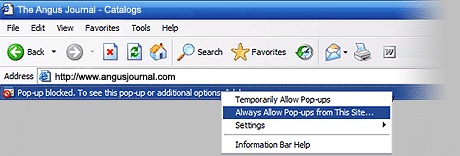

| Frequently Asked Questions |
Q. I can't see the catalog. Why won't it show up on my screen?
A.
In order to load the catalog for viewing, you must have the most current version of Adobe Flash Player installed on your computer. Click on the button below to install it now.
|
Q. I can’t get the pdf’s to download.
A. In order to load the pdf’s for a catalog, you must have the most current version of Adobe Acrobat Reader installed on your computer. Click on the button below to install it now.
|
Q.
How can I get a closer look and print the catalog?
A. Click on the center of your chosen page. A new page will pop up. From here you can zoom, and print.
|
Q. I clicked on the page, but no new page pops up.
A. Your browser may be blocking the pop-up window. Look for a yellow bar near the top of the page that says "Pop-up blocked." Choose "Always Allow Pop-ups from This Site..." and click on your chosen page again.

|
Q. How do I use the pop-up page?
A. Find the Zoom icon in the lower right hand corner and click on it to zoom in. You can use the mini menu to print, save, or e-mail the page.
|